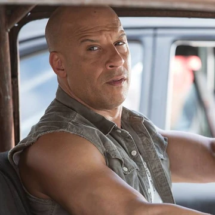
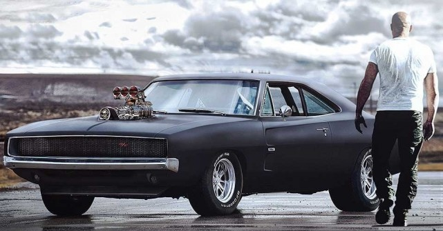
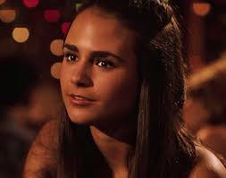
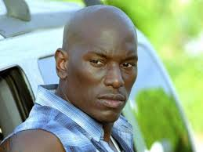
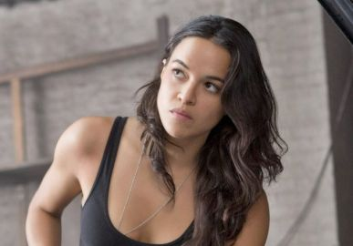
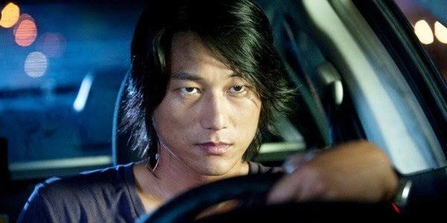
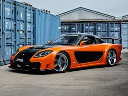

| Personagens |
Descrição |
Carro |
 |
Brian O'Conner (Paul Walker) é um ex-policial de Los Angeles (LAPD) e ex-agente do FBI que se infiltra no mundo das corridas de rua. Ele se torna aliado e membro da família de Dominic Toretto, apaixonando-se por Mia Toretto, tornando-se um foragido da lei e priorizando a lealdade à sua nova família. |
 GTR Skyline R34 GTR Skyline R34 |
|  |
Dominic Toretto (Vin Diesel) é o protagonista da franquia Velozes & Furiosos, retratado como um piloto de rua lendário, mecânico habilidoso e líder carismático com um rigoroso código de honra focado na família. Ex-presidiário e foragido, ele evolui de um criminoso que rouba cargas para sustentar os seus, a um herói relutante que enfrenta ameaças globais. |
Dodge Charger 1970 |
|  |
Mia Toretto (Jordana Brewster) é uma das personagens centrais da franquia Velozes e Furiosos. Irmã de Dominic Toretto, ela representa o elo emocional da família, sendo conhecida por sua lealdade, sensibilidade e força interior. Apesar de não viver diretamente o mundo das corridas e do crime no início, Mia acaba envolvida nesse universo por causa do irmão e de seu relacionamento com Brian O’Conner, um policial que depois se torna parte da família. |
 Acura integra Acura integra |
|  |
Roman Pearce (Tyrese Gibson) é um amigo de infância de Brian O'Conner. Ex-condenado, ele ganha liberdade ao ajudar a derrubar o traficante Carter Verone e, posteriormente, junta-se à equipe de Dominic Toretto, destacando-se pelo alívio cômico e coragem. |
 Eclypse Spider Eclypse Spider |
|  |
Letty Ortiz ( Michelle Rodriguez) é uma corredora de rua profissional, mecânica habilidosa e figura central na franquia. Amiga de infância e amor da vida de Dominic Toretto, Letty é conhecida por sua lealdade inabalável e personalidade dura. Ao longo da série, ela evolui de piloto de rua a ladra internacional, chegando a ser dada como morta e sofrendo de amnésia antes de retornar à equipe de Dom. |
 Nissan S14 Nissan S14 |
|  |
Han Lue ( Sung Kang) é um dos personagens mais queridos e icônicos da franquia Velozes e Furiosos. Conhecido por seu estilo calmo, habilidade no drifting e por estar quase sempre comendo algum lanche, Han é um membro fundamental da equipe de Dominic Toretto, agindo frequentemente como o estrategista ou o piloto de precisão. |
Mazda RX-7 |
 |
Tej Parker, (Ludacris) , é um personagem central na franquia Velozes e Furiosos, evoluindo de um organizador de corridas de rua em Miami para o principal especialista técnico e "hacker" da equipe de Dominic Toretto. |
 NSX NSX |
 |
o implacável agente federal Luke Hobbs (Dwayne Johnson) é enviado para capturar Dom, Brian e sua equipe. No início, Hobbs persegue o grupo com tudo o que tem — levando a confrontos e uma lendária briga entre ele e Dom — mas os planos mudam quando o time de Hobbs é emboscado pelos homens de Reyes e quase todo mundo morre. A partir daí, Hobbs forma uma aliança inesperada com Dom e seu grupo |
 Jeep Jeep |